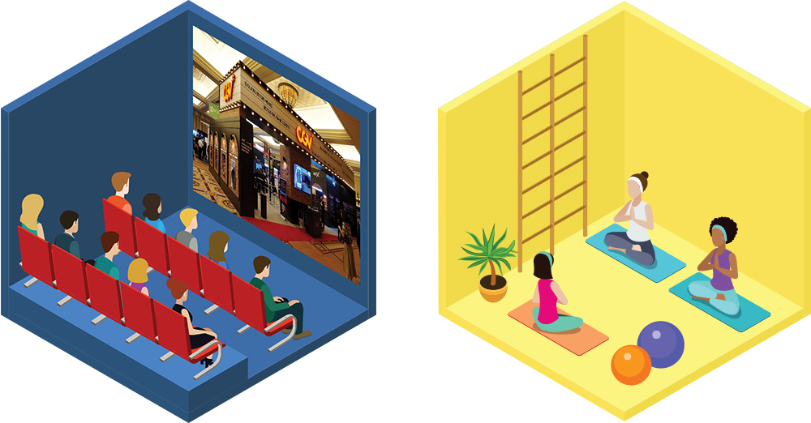
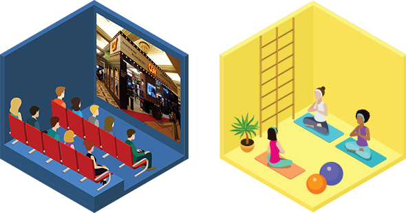

와 제 롤모델이 잡스에요!!! 아이폰 첫 출시되고 나서부터 계속 아이폰 쓰고 있는데 잡스가 너무 그리워요ㅠㅠ 지금은 돈만 벌려고 하는 것 같아서 디자인 발전도 없고ㅠㅠ와 제 롤모델이 잡스에요!!! 아이폰 첫 출시되고 나서부터 계속 아이폰 쓰고 있는데 잡스가 너무 그리워요ㅠㅠ 지금은 돈만 벌려고 하는 것 같아서 디자인 발전도 없고ㅠㅠ와 제 롤모델이 잡스에요!!! 아이폰 첫 출시되고 나서부터 계속 아이폰 쓰고 있는데 잡스가 너무 그리워요ㅠㅠ 지금은 돈만 벌려고 하는 것 같아서 디자인 발전도 없고ㅠㅠ와 제 롤모델이 잡스에요!!! 아이폰 첫 출시되고 나서부터 계속 아이폰 쓰고 있는데 잡스가 너무 그리워요ㅠㅠ 지금은 돈만 벌려고 하는 것 같아서 디자인 발전도 없고ㅠㅠ와 제 롤모델이 잡스에요!!! 아이폰 첫 출시되고 나서부터 계속 아이폰 쓰고 있는데 잡스가 너무 그리워요ㅠㅠ 지금은 돈만 벌려고 하는 것 같아서 디자인 발전도 없고ㅠㅠ
스페셜 칼럼
저녁 있는 삶,
무엇으로 채우시렵니까?
글
전미영(자유기고가)
52시간 근로시간 단축 합의안이 마련됨에 따라 바야흐로 ‘워라밸(일과 삶의 균형)’과 ‘저녁 있는 삶’이 새로운 화두로 떠오르고 있다. 우리 회사 또한 시대 흐름에 발맞춰 일과 삶의 조화로운 균형을 이루기 위해 ‘PC 오프제’를 실시하기로 했다. PC 오프제의 내용을 알아보고, 주 52시간 근무제가 바꾼 새로운 저녁 풍경을 들여다보자.
시간은 줄이고, 생산력은 높이고
PC 오프제의 시행 목적은 PC 제어 프로그램 도입을 통해 개인별 근로 시간을 보다 효율적으로 관리하는 것이다. PC 제어 프로그램은 크게 (1) 개인별 PC 사용 시간 및 Idle-time 기록, (2) 업무시간 종료 시 PC 사용 제한, (3) 연장근무 신청 및 승인 시스템으로 이루어지며, 해외주재원 및 운전원을 제외한 Level 6 이하 전 직원에게 적용된다.
공식 업무시간은 오전 9시부터 오후 6시이며, 오전 9시부터 근로시간으로 산정되고 오후 6시 이후에는 근로 제공이 금지된다. 따라서 근로시간 종료 후 PC 사용이 제한되며, 오후 7시 10분부터 10시까지는 관리자의 사전 승인 후 연장근로가 가능하다. 사전 승인이 없거나, 승인된 시간을 초과한 경우 PC 사용이 제한되며, 야간근로(오후 10시 이후)는 금지된다. 불가피한 사유로 야간근로가 필요한 경우 팀장 전자결재 뒤 인재경영팀에 전달해 PC 제어 변경 처리를 해야 한다. 또한, 휴일근무(8시간 이내)를 하게 될 경우 팀장의 사전 승인을 받아야 한다.


직장인의 저녁을 붙드는 문화 이벤트
언뜻 복잡해 보이지만 PC 오프제의 시행 목적은 분명하다. 불필요한 야근과 휴일 근무를 줄이고 짧은 근무시간 안에 집중력을 발휘해 보다 효율적으로 시간을 운용하기 위한 것. 우리 회사처럼 주요 기업들이 PC 오프제를 도입한 만큼 시간적 여유가 생긴 직장인의 저녁은 이른바 ‘워라밸’로 채워지고 있다. 이에 영화, 공연 업체, 유통업계 등은 앞다투어 직장인들을 위한 다양한 이벤트를 준비하고 있다.
멀티플렉스 CGV는 8월 30일까지 ‘칼퇴적응 프로젝트’를 실시해 매주 월~목요일 저녁 7시부터 8시 59분 사이에 시작하는 일반 2D 영화 예매 시 2,000원을 할인해준다. 세종문화회관은 ‘한야광 패키지’를 시행해 광화문 인근 식사 및 숙박을 묶어 패키지로 구매하면 요금을 최대 30% 할인해주는 이벤트를 진행 중이며, 두산아트센터는 하반기 공연시간을 오후 8시에서 7시 30분으로 30분 앞당겼다. 롯데월드는 오후 6시 이후 사원증 또는 명함을 제시하면 이용권을 대폭 할인해주며, 국립현대미술관과 서울시립미술관도 직장인들을 위한 야간 개관 프로그램을 확대할 계획이다.
백화점과 대형마트들은 이른 퇴근 후 직장인들의 발을 붙잡기 위해 각종 쇼핑 이벤트를 기획하고 문화센터 저녁 강좌를 늘리고 있다. 롯데백화점은 가을 학기 문화센터에 워라밸 관련 강좌를 50% 이상 늘렸고, 신세계백화점 문화센터는 직장인들의 관심사를 반영한 강좌 92개를 신설해 평일 오후 6시 이후와 주말에 배치했다. 이마트·롯데마트·홈플러스 등 대형마트들도 다양한 직장인 대상 가을 강좌를 신설했으며, 워킹맘&대디를 위한 육아 프로그램도 확대했다.
회식 대신 운동과 취미생활로 채우다
여유 시간을 취미생활로 채우려는 이들도 늘고 있다. 이베이코리아에 따르면 6월 23일부터 7월 22일까지 홈베이킹 가전 판매가 지난해 대비 2배 이상 증가했으며, DIY 만들기 재료나 미술재료 등도 각각 11배, 2배 늘었다. 또한 골프, 낚시, 자전거, 캠핑 등 아웃도어 제품 판매량도 지난해 같은 기간과 비교해 크게 늘었다고 한다. 야간 등산용품 판매량도 33% 늘었는데, 이는 퇴근 후 가벼운 산행을 즐기는 이들이 많아졌다는 방증이다. 집에서 운동하는 ‘홈트’ 열풍까지 더해져 홈 트레이닝 제품의 판매도 급성장하고 있다.
주 52시간 근무제가 본격 시행되면서 저녁이 있는 삶과 자기계발이 가능하다는 장점도 있지만, 한편으로는 업무 환경의 변화없이 진행된 이번 52시간 근무제로 인해 노동강도가 더 높아졌다는 사람들도 있다. 처음이기에 혼란도 있겠지만 장기적인 안목으로 ‘저녁있는 삶’을 위한 PC 오프제가 잘 정착되길 기대해본다.
-
최고예요
322
-
좋아요
322
-
슬퍼요
322
-
그저 그래요
322
-
화나요
322